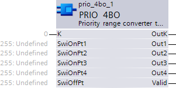
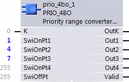
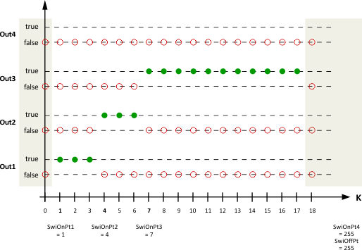
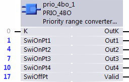
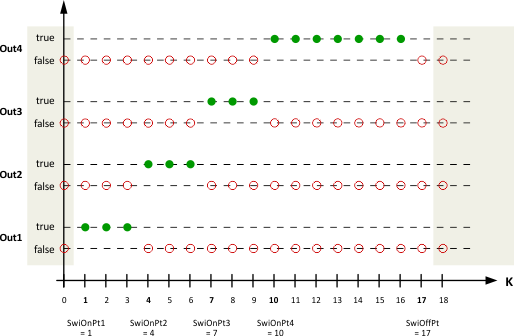

PRIO_4BO: Priority range converter to 4 boolean
The function block PRIO_4BO [FB419] converts parameterizable priority ranges to boolean output signals. One to four priority ranges can be parameterized.
When the input value on K [1...17] is within a parameterized priority range, the corresponding output Outx will be set true.
This function calls TIME_TCK[] function to get current timer value.
Block specification
K (Selector): K selects which priority range is active and accordingly the corresponding Out1...4 will be set true.
Inputs (Priority ranges): One to four priority ranges can be defined by the SwiOnPt1...4. If necessary an additional SwoOffPt can be defined.
Outputs: Out1...4 will be set exclusively true, that means only one of the outputs can be true at the same time.
Switch-off point: The parameterization of the SwiOnPts and SwiOffPt will be checked if it is valid.
Valid: The input value K will be ckecked if it is in valid range [1...17]

Inputs
Pin | E | O | Description |
K | pa |
| Selector |
SwiOnPt1...4 | pax |
| Switch-on point
In case the SwiOnPt is not used to define a priority range it must be set to 255 "undefined". |
SwiOffPt | pax |
| Switch-off point
In case the SwiOffPt is not used it must be set to 255 "undefined" |
Outputs
Pin | E | O | Description |
OutK | a |
| OutK indicates directly the value of K. |
Out1...4 | a | R | Out1...4 indicates which priority range is active. |
Valid | a |
| Valid indicates
|
Pin data
Pin | Description | Data type | Default value | E.g. Engineering unit or Text group | Min. | Max. | Pin type |
K | Selector | Int | True |
| -32767 | +32768 | In |
SwiOnPt1...4 | Switch-on point 1..4 | Int | 255 "undefined" | Enum | 1 | 17 or 255 "undefined" | In |
SwiOffPt | Switch-off | Int | 255 "undefined" | Enum | 1 | 17 or 255 "undefined" | In |
OutK | Output selector | Int | 0 |
| -32767 | +32768 | Out |
Out1...4 | Output 1...4 | Boolean | False | True/False | 0 | 1 | Out |
Valid | Valid information related to output signal | Boolean | 0 | No/Yes | 0 | 1 | Out |
Application—Example 1
Three priority ranges configured to be converted to Out1...3


Application—Example 2
Four priority ranges and SwiOffPt configured to be converted to Out1...4


Start-up response/trouble shooting
On start-up the block calculates the output values depending on the input values.